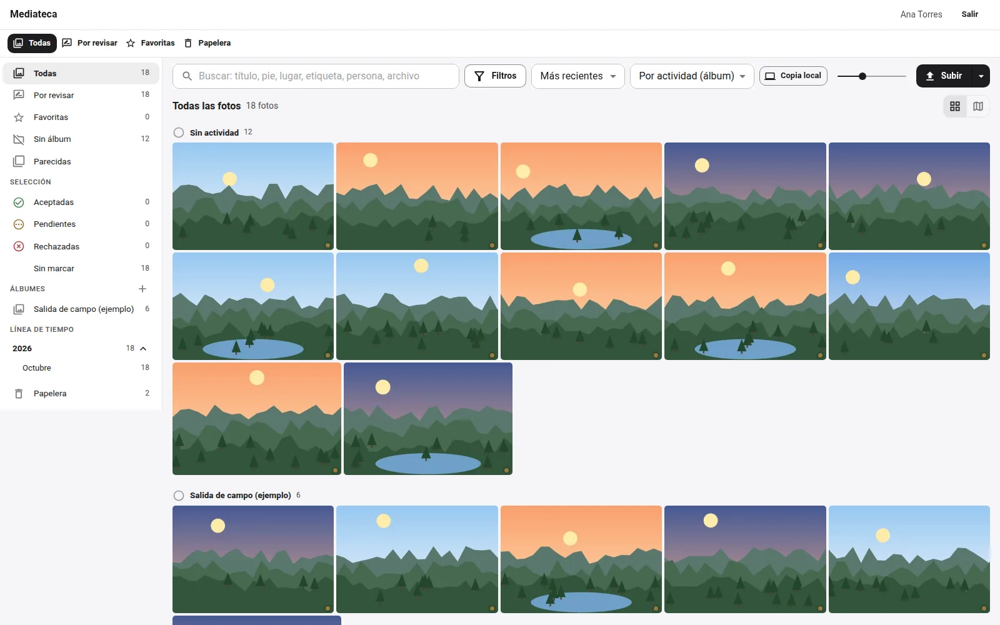

Manifiesto
Id, nombre, versión, rutas y prefijos, lo que ofrece, necesita y aprovecha, eventos, resolutores y tareas.
Software libre · Apache-2.0 · parte de la plataforma Qillqa
Tiqsi es el contrato con que los proyectos de una plataforma se conectan sin importar el código de los otros: cada módulo declara un manifiesto con lo que ofrece, lo que necesita y lo que aprovecha, y un anfitrión los monta en orden. Cada uno puede funcionar solo, con el anfitrión mínimo, o junto a los demás dentro de Qillqa.
Tiqsi significa «cimiento» en quechua.

Recorrido
Las capturas son de la demo, con datos ficticios. Elige una pantalla.
Pruébalo
Elige el anfitrión y los módulos. Tiqsi valida lo que cada uno necesita, conecta lo que aprovecha y los monta en orden; si algo falta, no arranca ninguno.
El contrato
Un módulo no importa el código de los otros: dice lo que da y lo que pide. El anfitrión hace el resto.
from tiqsi import Manifiesto, EntradaMenu
MANIFIESTO = Manifiesto(
id="recibidos", nombre="Mesa de Partes", version="0.1.0", contrato="^0.1",
routers=[router], prefijos=("/api/entradas",),
necesita=("identidad.v1",), # sin esto no arranca
aprovecha=("directorio.v1", "calendario.v1"), # si el anfitrión lo tiene
ofrece={"recibidos.v1": RECIBIDOS_V1}, # lo que da a los demás
resolutores={"entrada": resolver_entrada}, # «recibidos:entrada:42»
)Qué hace
Id, nombre, versión, rutas y prefijos, lo que ofrece, necesita y aprovecha, eventos, resolutores y tareas.
Un registro de contratos con versión («documentos.v1»): «obtener» si se necesita, «opcional» si se aprovecha.
Dentro del proceso, con comodines y manejadores aislados: un error de uno no tumba a los demás.
El evento se guarda con el cambio que lo origina y se entrega al menos una vez, aunque la API se reinicie.
«modulo:tipo:id» en lugar de claves foráneas entre módulos, con sus resolutores.
Valida, conecta y monta las rutas en el orden declarado; arranca y detiene las tareas; nunca a medias.
Cuentas locales, inicio de sesión e identidad: lo justo para que un módulo funcione solo.
La versión pública de un proyecto, escaneada y en una rama huérfana que no comparte historia.
Probarlo
Requisitos: Python 3.11 o más nuevo. Tiqsi es una biblioteca: se instala y se prueba; los módulos que la usan se arrancan solos con su anfitrión mínimo.
La plataforma Qillqa
Todos se conectan por Tiqsi y todos funcionan solos. Cada nombre está en quechua.